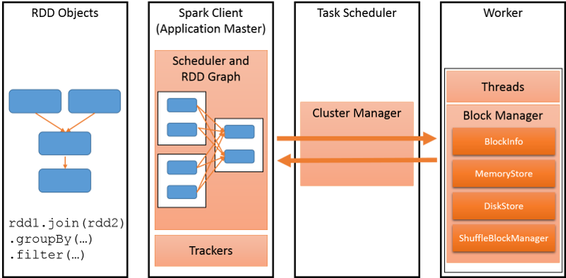
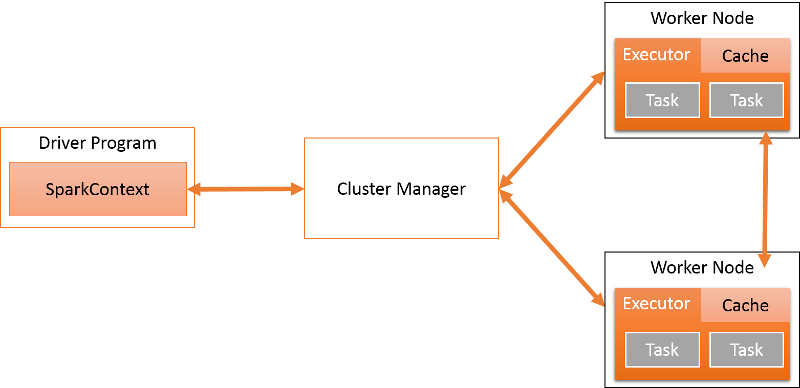
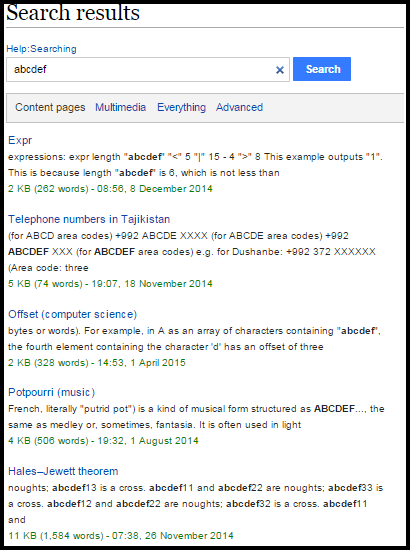
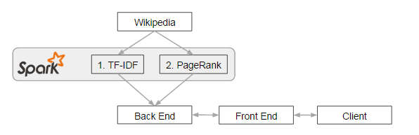
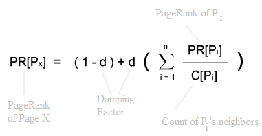

Iterative Programming using Apache Spark
Learning Objectives
This project will encompass the following learning objectives:
- Develop distributed iterative applications on large datasets using the Apache Spark framework.
- Build a search-term ranking function using Term Frequency - Inverse Document Frequency (TF-IDF) to find the most relevant documents for a search-term.
- Build a document ranking function using PageRank to find the most important documents in a corpus.
Resource Tagging And Budgets
Tag all of your resources with Key: Project and Value: 4.2
You have a budget $25 for Project 4.2.
Introduction
After Project 4.1, Mellonitics now has an input text predictor, but it still does not have any search functionality. You take on the responsibility to add this core feature to your search engine. Specifically, you are responsible for building a search engine for Wikipedia documents.
Using the Wikipedia dataset, you need to build an index over it to allow a search of its contents. Of course, it is important for your search engine to return useful results, and you decide to explore two techniques to perform this task.
The techniques used are Term Frequency - Inverse Document Frequency (TF-IDF) and PageRank. Both return results in a different order either based on the relevance or the importance of the document to the search term.
When working with multi-step or iterative algorithms on large datasets, MapReduce performs non-optimally primarily because it relies on spilling and reading data to/from disk at each step. The Apache Spark framework improves the performance of such applications by using a shared, distributed in-memory data abstraction known as Resilient Distributed Datasets (RDDs).
What is Apache Spark?
Spark is an open source cluster computing framework developed at the UC Berkeley AMPLab. It uses in-memory primitives that allow it to perform over 100x faster than traditional MapReduce for certain applications.
Spark was built and optimized towards three classes of parallel distributed applications:
- Iterative: such as most machine learning tasks that iterate over a training data set until convergence is met
- Interactive: where users run commands that return results in real-time.
- Streaming application: where input data is continuously arriving from one or a few streams leading to an update of the stored state
Along with the framework to run such applications, several libraries have grown around Spark, allowing fast execution of SQL-like queries, Machine Learning and Graph Computation applications.
The goal of any distributed programming framework is to support the execution of a parallel computation across multiple nodes in a performant manner. Consider an iterative application that runs a machine learning algorithm on a large graph. Spark would store this graph as a Resilient Distributed Dataset (RDD) (Figure 1). The Spark Client would store the details of the program to be executed and map it to Spark-specific operations for a cluster, which comprises of many workers. There is a cluster manager that converts these operations into tasks and executes them on worker nodes. Any cluster requires applications to be scheduled well to maximise the utilization and improve performance. Spark allows different policies to be used to schedule tasks on the cluster depending upon factors such as the priority, duration, and resources required by each task.
Figure 1: Spark Components
Spark relies on Resilient Distributed Datasets (RDDs), a distributed memory abstraction to support fault-tolerant, in-memory computations on large datasets. Programmers invoke operations on RDDs by passing closures (functions) to workers, which are copied to and executed at these workers. We will explore each part of this system in detail.
Spark application developers write a driver program to connect to a cluster of workers. The driver defines one or more RDDs and invokes actions on them. The driver also tracks the RDDs’ lineage, which records the history of how this RDD is generated as a Directed Acyclic Graph (DAG). The workers are long-lived processes (running for the entire lifetime of an application) that can store RDD partitions in RAM across operations.
The SparkContext object can connect to several types of cluster managers that handle the scheduling of applications and tasks (Figure 2). The cluster manager isolates multiple Spark programs from each other- each application has its own driver and runs on isolated executors coordinated by the cluster manager. Currently, Spark supports applications written in Scala, Java and Python.
Figure 2: Spark Architecture
Once the SparkContext connects to the ClusterManager, Spark acquires executors on the worker nodes, which are the actual processes that run computation and store data. After an executor is acquired, the Java/Python/Scala code is sent to the executor and run as tasks. Notice that each application has its own executor processes, which run tasks in multiple threads. The executor exists for the entire application lifecycle.
An advantage of this approach is that applications are isolated from each other. Scheduling decisions are made by individual drivers independent of other applications. Also, executors for different applications are isolated as each one runs in a separate JVM. The disadvantage is that it is more difficult to share data between applications.
Each Spark application runs as an independent set of processes on a distributed cluster. The driver is the process that runs the main() function of the application and creates a SparkContext object. Spark applications are coordinated by the SparkContext object. The SparkContext in turn connects to a Cluster Manager, which allocates resources across all applications on the cluster. The SparkContext object also contains a number of implicit conversions and parameters for use with various Spark features.
Programming in Apache Spark
Spark programs work by operating on and persisting Resilient Distributed Datasets (RDDs).
Let us look at some versions of computing WordCount using Spark.
Scala version:
val file = spark.textFile("hdfs:///input")
val counts = file.flatMap(line => line.split(" "))
.map(word => (word, 1))
.reduceByKey(_ + _)
counts.saveAsTextFile("hdfs:///output")
Java version:
JavaRDD<String> file = spark.textFile("hdfs:///input");
JavaRDD<String> words = file.flatMap(new FlatMapFunction<String, String>() {
public Iterable<String> call(String s) { return Arrays.asList(s.split(" ")); }
});
JavaPairRDD<String, Integer> pairs = words.mapToPair(new PairFunction<String, String, Integer>() {
public Tuple2<String, Integer> call(String s) { return new Tuple2<String, Integer>(s, 1); }
});
JavaPairRDD<String, Integer> counts = pairs.reduceByKey(new Function2<Integer, Integer>() {
public Integer call(Integer a, Integer b) { return a + b; }
});
counts.saveAsTextFile("hdfs:///output");
Python version:
file = spark.textFile("hdfs:///input")
counts = file.flatMap(lambda line: line.split(" ")) \
.map(lambda word: (word, 1)) \
.reduceByKey(lambda a, b: a + b)
counts.saveAsTextFile("hdfs:///output")
The steps are as follows:
- Load the text files at HDFS path (say
/input) bytextFile()as a RDD of String. - Split each line by space to get all the words in the line. We use
flatMap()here, because we expect to get a RDD of words from the RDD of lines and each line can have multiple words. - Emit the count 1 along with each word. So we use
map()to transform the RDD of word into a RDD of (word, count) pairs. Steps 2 and 3 are equivalent to the mapper in MapReduce. - Sum the count for each word by using
reduceByKey(). This transforms the RDD of (word, count) pairs where count = 1, into the final RDD of (word, count) pairs where count is the number of times the word appears. Step 4 is equivalent to the reducer in MapReduce. - Persist the RDD as plain text files to HDFS path (say
/output).
Figure 3: Operations on RDDs in Word Count
One interesting parallel to highlight is that Spark code often uses map() and reduce() primitives, allowing you to apply a single function to an entire RDD or a group of multiple RDDs.
Notice that we use flatMap(func) in Step 2. flatMap(func) expects the func to return a list rather than an object, and the result is flattened as a list.
For example, if we have rdd = (1, 2, 3, 4), rdd.map(x => (x, x + 1)) => ((1, 2), (2, 3), (3, 4), (4, 5)), rdd.flatMap(x => (x, x + 1)) => (1, 2, 2, 3, 3, 4, 4, 5).
There is also an essential difference between reduce(func) and reduceByKey(func). reduce(func) can be applied to a RDD of any object, while reduceByKey(func) can only be applied to a RDD of object pair. Values that belong to the same key are aggregated together by func.
For example, if we have rdd = (1, 2, 3, 4), rdd.reduce(case (a, b) => a + b) => 10,
rdd.reduceByKey(case (a, b) => a + b) cannot be applied because it expects a RDD of object pair.
In addition, if we have rdd = ((1, 2), (1, 3), (2, 4), (2, 5)), rdd.reduce(case (a, b) => a + b) cannot be applied because the plus operation (+) is not defined on object pair, rdd.reduceByKey(case (a, b) => a + b) => ((1, 5), (2, 9)).
An underscore in Scala is a syntactic sugar. In the Word Count example, reduceByKey(_ + _) is equivalent to reduceByKey(case (a, b) => a + b). The keyword case is a Scala-specific concept of case classes. If you are interested in more examples, please visit this link.
Search Ranking Functions
Before the advent of web search engines, information retrieval (IR) systems were mainly used to index and retrieve documents in libraries and universities. However, just as in search engines, document relevance was of interest to the IR community. Furthermore, modern search engines incorporate information about the user, including location, search history, and many other forms of proprietary personalizations. They also make many adjustments to group together multiple search terms, correct spelling errors, support wildcards and custom search filters.
However, such systems require many data sources and are beyond the scope of a two-week project. Instead, we build some useful primitives used to signify document relevance, which are used by the classical IR community. Any ranking system, takes a query q and returns a collection of documents D sorted by order O.
The first technique you will use to rank search results is Term Frequency-Inverse Document Frequency (TF-IDF), which computes the baseline content relevance for a search term in a document. TF-IDF is a two-step computation and should work well on Spark, if given enough memory to store the entire working set of data.
Next, you will implement PageRank, Google's original search algorithm. PageRank relies on the underlying assumption that the number and quality of incoming links to a page determine its importance.
Term Frequency--Inverse Document Frequency (TF-IDF)
Term Frequency (TF)
Term frequency ranking assumes that a document is more important for a word if it occurs more frequently for that word. Term Frequency counts the raw frequency of a term in the document, i.e. the number of times the term t occurs in the document d.
This is known as the Luhn Assumption:
The weight of a term that occurs in a document is simply proportional to the term frequency.
Inverse Document Frequency (IDF)
Notice that Term Frequency (TF) Ranking is excessively biased towards documents with many common words ("a", "the", "this"...) and does not give sufficient weight to rarer words ("sharding", "scaling", "infrastructure"...).
The Inverse Document Frequency (IDF) is a measure of content relevance that is higher for terms that occur less frequently in the corpus. In its simplest form, the IDF of a keyword can begin to be computed by dividing the total number of documents in the corpus by the number of documents in which the term occurs. A log is then run on this fraction
Low-frequency terms will thus have a higher IDF and hence will be better at identifying relevant documents for a query. IDF is also known as term specificity. Formally, this is defined as:
The specificity of a term can be quantified as an inverse function of the number of documents in which it occurs.
The IDF measures how much information the word provides, that is, whether the term is common in all the documents.
The TF-IDF of a word i in document j may be expressed as:
PageRank
PageRank represents numerically the importance of a page in the web or of a document in the corpus. The intuition behind PageRank is that when many pages link to a single page P, then P is an important page. And of course, the larger the number of incoming links, the greater the importance of the page.
Also, to measure the quality of the incoming links, and not just the quantity, PageRank is computed iteratively. If more important (high PageRank) pages link to the page X, then X will have a high PageRank. This is because, the sum total of all PageRanks within a corpus is fixed, and these values are updated (and re-distributed) at each iteration.
At each iteration, the pages with incoming links steal some weight from those linking to them. Of course, this is a very simplified view of PageRank. It is explained in more detail in the implementation section. The main complication ignored for now is that of dangling pages (see below).
The Datasets
The dataset for the TF-IDF and PageRank parts are separate.
For Part 1 (TF-IDF), the dataset comprises of a tab-separated files. This file contains articles in XML and metadata associated with each article. Each line contains a single Wikipedia article. This is all present in tsv.bz2 files located at Please use the dataset s3://s15-p42-part1/s3://s15-p42-part1-easy/data/ for this project. This contains some selectively filtered Wikipedia articles, since the full dataset may require much longer runs. However, if you want to observe a more complete search engine in terms of having all possible articles, use the full dataset, stored at s3://s15-p42-part1/. Submitting using the full dataset will result in a 5% bonus for Project 4.2. . A sample can be found and downloaded here.
Each line is of the form:
PageID Title Date XMLArticle Article
For Part 2 (PageRank), we have created a list of arcs of the form (a,b) where a links to b.
These can be found in the file s3://s15-p42-part2/wikipedia_arcs
Each article has been replaced by a single identifying number. For your convenience, the mapping may be found at s3://s15-p42-part2/wikipedia_mapping
Project Walkthrough
The goal of this project is to extend the website from the previous project to return relevant search results for a single search term. Below, you see the Wikipedia search results for the term abcdef.
Figure 4: A Basic Search Engine for Wikipedia
You are expected to build a simpler version of this that only supports unigram (single word) search terms, and only shows the most relevant page titles (linking to Wikipedia). You do not need to show the most relevant snippet of text. To generate the rankings and the mappings, you must use the Apache Spark framework.
Your Spark programs must process data from Wikipedia to build two search indexes. These can then be loaded to a database and used to respond to search queries.
Launching a Spark cluster
To start a standalone Spark cluster, you can follow the instructions in Running Spark on EC2. For your convenience, we have listed the following steps for reference:
- Download the pre-compiled Spark version 1.3.0 that is compatible with Hadoop 2.4 as follows:
wget http://apache.mirrors.ionfish.org/spark/spark-1.3.0/spark-1.3.0-bin-hadoop2.4.tgz
- Untar the file
tar zxvf spark-1.3.0-bin-hadoop2.4.tgz
- Change the directory
cd spark-1.3.0-bin-hadoop2.4/ec2
- Set your AWS access key and secret to environment variables
export AWS_SECRET_ACCESS_KEY=AaBbCcDdEeFGgHhIiJjKkLlMmNnOoPpQqRrSsTtU export AWS_ACCESS_KEY_ID=ABCDEFG1234567890123
- Launch a Spark cluster by
./spark-ec2 -k <keypair> -i <key-file> -s <num-slaves> launch <cluster-name>
where <keypair> is the name of your EC2 key pair (which you see on the AWS Web Console), <key-file> is the private key file for your key pair, <num-slaves> is the number of slave nodes to launch (try 1 at first), and <cluster-name> is the name to give to your cluster.
- You can specify instance size with the
-toption. We recommend always using r3 EC2 instances due to their large memory. Additionally, the--spot-price=option will save a lot of money, but your cluster may take longer to provision. Use your resources judiciously. - Tag launched instances immediately.
- Login to the Spark master using the command
./spark-ec2 -k <keypair> -i <key-file> login <cluster-name>
where <keypair> and <key-file> are as above. You can also SSH into the master directly by using your key pair withec2-useras the username. - To check if Spark is installed correctly, you can run the Spark Pi Calculator by executing
spark/bin/run-example SparkPi
If you see a message likePi is roughly 3.13768, it means that you have successfully started a Spark cluster and are ready to move on! - ./bin/spark-submit can be used to launch custom standalone programs. See this URL for more details or use the --help option to see all options.
- You can run your own program through either bin/spark-shell or as follows:
# Java mkdir target javac -classpath /root/spark/conf:/root/spark/lib/spark-assembly-1.3.0-hadoop1.0.4.jar -d target/ examples/src/main/java/org/apache/spark/examples/JavaSparkPi.java jar cvf JavaSparkPi.jar -C target/ . bin/spark-submit --class org.apache.spark.examples.JavaSparkPi JavaSparkPi.jar # Scala mkdir target scalac -classpath /root/spark/lib/spark-assembly-1.3.0-hadoop1.0.4.jar -d target/ examples/src/main/scala/org/apache/spark/examples/SparkPi.scala jar cvf SparkPi.jar -C target/ . bin/spark-submit --class org.apache.spark.examples.SparkPi SparkPi.jar # Python ./bin/pyspark examples/src/main/python/pi.py
- If you plan to use Spark with Java, use the following Maven Project Object Model
Part I : Multi-step Computation of TF-IDF using Spark
You have already seen the TF-IDF rank explained above.
Tasks to complete: Part 1
Remember that TF-IDF is computed as:
Take as your input thePlease use the datasets3://s15-p42-part1/.s3://s15-p42-part1-easy/data/for this project. This contains some selectively filtered Wikipedia articles, since the full dataset may require much longer runs. However, if you want to observe a more complete search engine in terms of having all possible articles, use the full dataset, stored ats3://s15-p42-part1/. Filter each file into two parts: (title, text).- For each word in a document, compute the number of times it occurs. Store this in the form (word,title),count. Here, count is the term frequency for each word for each document.
- Just as in the previous project, convert the text field(XMLArticle) into lowercase alphabets and space only.
- Delete all XML tags.
- Replace all
\\n(displayed as \n in text) - Replace all punctuations and numbers with a whitespace.
- Split by whitespaces to find words.
- For each word in the dataset:
- Count the number of documents in which each word occurs (d_word). Count the total number of documents in the dataset (N).
- Compute the IDF for each word-document pair, using log(N/d_word)
- Store this in the form (word,title),idf
- Multiply the results of the previous two steps to generate the TF-IDF for each word. Store this in the form (word,title),tfidf.
- Finally, from your list of TF-IDF, find the top 100 documents for the search term "cloud". Store these in descending order of frequency (order ties alphabetically by title) a tab-separated file named "tfidf" in the format:
document_title tf-idf_value
- The next step is to autograde your answers and submit your code. Place all code for this step in the same folder as the submitter (paste spark shell commands into a file if you used only shell commands) and run the following commands:
cd ~ wget https://s3.amazonaws.com/15-319-s15-p42/submitter chmod +x submitter submitter -t
- If you have run your code on the larger dataset and wish to be assessed for the bonus, place all code along with the answer file for this step in the same folder as the submitter (paste spark shell commands into a file if you used only shell commands) and run the following commands:
cd ~ wget https://s3.amazonaws.com/15-319-s15-p42/submitter chmod +x submitter submitter -b
Job Monitoring
You might find it helpful to monitor the progress of your Spark application by going to the Spark UI. This is available at: http://your-master-dns:8080. This link provides details such as the number of stages completed, tasks remaining, etc.
You may also use the script in sbin/start-history-server.sh to start the history server. Its web UI is available at http://your-master-dns:18080 by default.
Part II : Iterative Computation of PageRank using Spark
To compute PageRank on a graph dataset, there are two stages.
Stage 1 creates a simple network from the given text corpus. This is in the form of an adjacency list. An adjacency list is a graph expressed as
| Node | Neighbors |
|---|---|
| a | b,c,d |
| b | c,d |
| c | d |
| d | e |
Stage 2 involves running PageRank on this graph
Tasks to complete : Part 2
Remember that PageRank is computed as:

To compute the PageRank, follow these steps:
- Take as your input the data from
s3://s15-p42-part2/. - Construct an adjacency list for each document (as explained above).
- Assign a weight 1.0 to each document.
- Iterate the following steps 10 times:
- For each node in the graph, distribute the PageRank equally amongst all its neighbors. This can be thought of as a map operation.
- Update the PageRank of each document to 0.15 + 0.85 * (contributions)
, where contributions is the total PageRank earned from all neighbors of the document.
- Make sure you handle the case of dangling pages. Dangling pages are pages with no outbound links. These are not handled in the example implementation (from the Spark example code). Hence do not rely on it as only the example code as a template for what to do.
Consider the following starting position:
key: page1 value: 1.0 page2 page3 key: page2 value: 1.0 page3 page1 key: page3 value: 1.0After 1 iteration, the same contributions will be received by each page, as shown:key: page1 contributions received: 0.5 adjacency list: page2 page3 key: page2 contributions received: 0.5 adjacency list: page3 page1 key: page3 contributions received: 1.0 adjacency list:page3is a dangling page. Dangling pages are pages with no outbound links. In PageRank, they generally represent pages that have not been crawled yet. Unfortunately, the total aggregate of all PageRank values should be a constant (as per the formal definition of PageRank). However, dangling pages do not emit any weight and hence, the system tends to lose weight at each iteration. The way to correct this is by redistributing the weight of dangling pages across all the other pages at the end of an iteration. In this example, there is only one dangling page (page3). Hence, its contribution (1.0 should be distributed equally amongst page1, page2, page3).Hence, the new PageRanks are:
page1 = 0.15 + 0.85 * (0.5 + 1.0/3) = 0.8583 page2 = 0.15 + 0.85 * (0.5 + 1.0/3) = 0.8583 page3 = 0.15 + 0.85 * (1.0 + 1.0/3) = 1.2833 - In each iteration, the program should end with the data structure format it started with. This ensures that the algorithm is correctly iterative.
- Finally, from your output list of PageRank, find the top 100 documents. Store these in descending order of frequency (order ties alphabetically by title) a tab-separated file named "pagerank" of the type:
document_title pagerank_value
- The next step is to autograde your answers and submit your code. Place all code for this step in the same folder as the submitter (paste spark shell commands into a file if you used only shell commands) and run the following commands:
cd ~ wget https://s3.amazonaws.com/15-319-s15-p42/submitter chmod +x submitter submitter -p
Tasks to complete : Bonus
- Load the two ranks into a database (Spark SQL). This works exactly like Hive.
- Download the web server using: wget https://s3.amazonaws.com/15-319-s15/proj4_web.zip
- Update the homepage such that when a term is searched for (single word only), the results are filtered and sorted as follows:
- The top 20 documents for that word are filtered out using TF-IDF.
- Sort these 20 documents using PageRank and display them to the web UI.
- Once you have ensured your results are visible from a browser at http://your-frontend-dns/proj4_web/results.html?term='term' , run the following:
cd ~ wget https://s3.amazonaws.com/15-319-s15-p42/bonus/submitter_bonus chmod +x submitter_bonus ./submitter_bonus
Project Grading Penalties
Besides the penalties mentioned in recitation and/or on Piazza, penalties accrue for the following:
| Violation | Penalty of the project grade |
|---|---|
| Spending more than $25 for this project checkpoint | -10% |
| Spending more than $50 for this project checkpoint | -100% |
| Using GraphX or MLLib library functions | -100% |
| Failing to tag all your resources for this project | -10% |
| Using any instance other than the ones specified in the writeup | -10% |
| Attempting to hack/tamper the auto-grader | -100% |